XÂY DỰNG ỨNG DỤNG
FLASH BẰNG FLASHDEVELOP VÀ FLEX SDK
I. Giới thiệu
Cho đến bây giờ
nhiều người (thậm chí là một số lập trình viên web)
vẫn nghĩ rằng để làm ra Flash phải sử dụng các công
cụ thương mại như Flash CS5 hay Flash Builder. Thực tế là
lập trình viên hoàn toàn có thể làm Flash bằng các công
cụ hoàn toàn miễn phí. Giống như Java hay .NET, Flash cũng
có bộ biên dịch miễn phí tên là Flex SDK và bạn có thể
viết code ActionScript 3 bằng bất kỳ trình biên soạn text
nào.
Bài viết này sẽ
hướng dẫn các bạn từng bước viết một hoạt cảnh
Flash đơn giản bằng 2 công cụ miễn phí đó là
FlashDevelop (FD) và Flex SDK. Đối tượng hướng tới của
bài viết này là các bạn đã có kiến thức căn bản về OOP và mới làm quen
với Flash hoặc
những ai chỉ quen sử dụng Adobe Flash CS 3/4/5 (sau đây sẽ
gọi là Flash Pro).
Ghi chú: Không
như cái tên của nó, Flex SDK không phải chỉ để biên dịch ứng dụng viết
bằng Flex (AS + MXML). Flex SDK còn được dùng để biên dịch ứng dụng
viết hoàn toàn bằng ActionScript (AS); biên dịch và đóng gói ứng dụng
desktop AIR; xuất tài liệu tham khảo từ các comment trong mã nguồn
(tương tự javadoc)...
Bạn không cần hiểu ngay những khái niệm
mới nêu ra trong bài viết này.
Hãy làm theo hướng dẫn và tự trải nghiệm, bạn sẽ dần dần hiểu và nắm
được chúng.
Bài viết này sẽ hướng dẫn phát
triển ứng dụng Flash với ActionScript 3 thuần túy (pure
ActionScript 3).
Yêu cầu phần mềm
trước khi bắt đầu:
-
Windows XP / Vista / 7
-
.NET Framework 2.0.
(download):
để chạy FlashDevelop 3
-
Java Runtime Environment 1.6+ (download):
để
chạy Flex SDK
II. Tải về và
cài đặt
A. Đối với FD trước 3.3.0 hoặc bạn
không chọn tải về Flex SDK lúc cài FD 3.3+
-
Đến trang http://opensource.adobe.com/wiki/display/flexsdk/Flex+SDK
để tải về Flex SDK mới nhất.
Đến thời điểm viết bài này có 2 bản Flex SDK là:
- Fex SDK
3.5: Biên dịch ứng dụng Flash 9 và 10.0, AIR 1.5.3.
Đối với người mới bắt đầu hoặc mới chuyển từ AS2, tôi khuyên các bạn sử
dụng bản 3.5 sẽ ít rắc rối hơn.
- Flex SDK
4.1: Biên dịch ứng dụng Flash 10.0 và 10.1, AIR 2.0.
Dùng phiên bản này khi bạn đã hiểu và nắm vững Flex SDK, hoặc có nhu
cầu biên dịch ứng dụng cho Flash 10.1 trên thiết bị di động.
Sau khi tải Flex
SDK về, giải nén vào một thư mục dễ truy cập. VD:
C:\flex_sdk
-
Nếu bạn chưa cài FlashDevelop, hãy đến
trang: http://flashdevelop.org
để tải về và cài bản FD mới nhất. Sau đó
chạy FD lần đầu tiên.
-
Chỉnh settings của
FD để FD biết và sử dụng trình biên dịch của Flex SDK:
Vào menu Tools > Program Settings > chọn AS3 context trong danh
sách plugins > tìm đến Language > chọn Flex SDK Location >
nhấn vào nút “...” > duyệt và chọn thư mục C:\flex_sdk
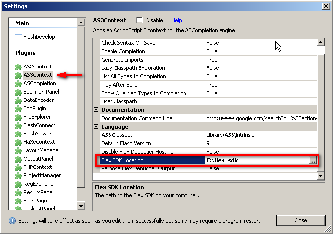
-
(Không bắt buộc) Chỉnh settings của FD
để test ứng dụng với Flash Player debugger có sẵn trong Flex SDK:
Tại Program Settings > chọn Flash Viewer > External Player Path
> nhấn vào nút "..." > duyệt và chọn Flash Player trong Flex SDK,
thông thường nằm tại:
(Flex SDK 3.5) C:\flex_sdk\runtimes\player\10\win\FlashPlayer.exe
(Flex SDK 4.1)
C:\flex_sdk\runtimes\player\10.1\win\FlashPlayerDebugger.exe
Cũng tại trang settings của Flash Viewer, chọn “External” cho Movie
Display Style.
B. Đối với FD từ 3.3.0 trở đi:
-
Bạn cũng đến trang: http://flashdevelop.org để tải về
và cài bản FD mới nhất.
Phiên bản hiện tại khi viết bài này là 3.3.1
-
Trong lúc cài đặt, FD có tùy chọn tải
về Flex SDK. Nếu chọn, FD sẽ tải về Flex SDK mới nhất là 4.1.
Flex SDK được tải về sẽ nằm trong thư mục: [thư mục cài
FD]\Tools\flexsdk
-
Sau khi tải về Flex SDK và hoàn tất
cài đặt FD, FD sẽ tự động config để làm việc với Flex SDK. Bạn không
cần phải làm bước 3 và 4 ở trên.
III.
Viết và biên dịch ứng dụng “Hello World”
-
Mở menu Project > New Project...

-
Trong danh sách project template, chọn ActionScript
3 - AS3 Project. (Đây là template cho dự án Flash ActionScript 3 thuần
túy.)
Tại trường Name, nhập vào tên dự án (HelloAS3).
Tại trường Location, duyệt và tạo một thư mục mới cho dự án này.
Sau đó OK. FD sẽ hỏi tên mặc định cho tác giả (@author) nếu bạn chưa
cài cho nó.
-
Tại cửa sổ Project (mặc định ở bên phải), mở thư
mục src và double click lên file Main.as để mở nó bên cửa sổ soạn thảo.
Đây là nội dung tạo sẵn cho lớp Main:
package
{
import flash.display.Sprite;
import flash.events.Event;
public class Main extends Sprite {
public function Main():void {
if (stage)
init();
else
addEventListener(Event.ADDED_TO_STAGE, init);
}
private function init(e:Event =
null):void {
removeEventListener(Event.ADDED_TO_STAGE, init);
// entry point
}
}
}
Ghi chú: Để
biên dịch với Flex SDK, bạn cần chỉ định một file target. Lớp của file
này phải extend từ MovieClip hoặc
Sprite và nó là đối tượng hiển thị
(display object) đầu tiên được đặt lên stage. Để dễ hình dung, lớp này
sẽ tương ứng với Document Class nếu
bạn build ứng dụng bằng Flash Pro.
Mặc định bởi template AS3 Project, file Main.as đã được chọn làm target
để biên dịch. Khi nhấn
chuột phải lên tên file, bạn sẽ thấy mục “Always Compile” đã được đánh
dấu chọn. Bạn cũng có thể chọn Always Compile cho một lớp khác nếu muốn
thay đổi target.
-
Sửa hàm init() được tạo sẵn với nội dung sau:
private
function init(e:Event = null):void {
removeEventListener(Event.ADDED_TO_STAGE, init);
//trace output
trace(“init() is called”);
//tạo text field mới
var helloText: TextField = new TextField();
//set giá trị text cho text field
helloText.text = "Hello World";
//đặt text field lên stage
addChild(helloText);
}
-
Build và test ứng dụng Flash bằng cách nhấn vào nút
Test Movie trên thanh toolbar (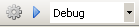 nút play màu xanh) hoặc nhấn
shorcut F5.
Bên dưới, FD sẽ gọi lệnh mxmlc của Flex SDK để biên dịch ứng dụng Flash
của bạn.
Nếu mọi việc suôn sẻ bạn sẽ thấy:
- Ứng dụng của bạn sẽ được chạy trên Flash Player standalone với chữ
“Hello World”.
- Trong panel output, bạn sẽ thấy dòng trace “init() is called”
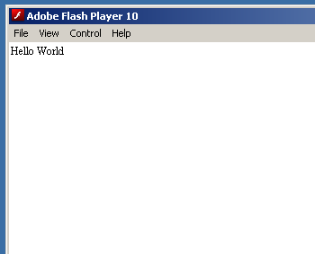
Nếu ở các bước trước bạn chưa cài đặt đường dẫn đến Flex SDK, FD sẽ
cảnh báo và yêu cầu bạn cài đặt đường dẫn đến Flex SDK ở trong AS3
context (bước II.A.3)
-
Bạn có thể điều chỉnh kích thước mặc định của ứng
dụng Flash khi xuất ra bằng cách vào Project > Properties (hoặc nhấn
nút Project Properties trên panel Project) > tab Output > General
> sửa lại Dimensions (chẳng hạn 500x400).
Tại đây bạn cũng có thể sửa màu nền mặc định và framerate mặc định.
Sửa xong bạn chạy test lại để thấy thay đổi.
Ghi chú:
FlashDevelop khi build với
Flex SDK sẽ sử dụng một process có tên là Flex Compiler
Shell (fcsh). Process này sẽ được tạo ra khi build lần đầu
và lưu lại trong RAM cho đến khi thoát FD. Do đó những lần
build sau, bạn sẽ thấy tốc độ build cực nhanh.
Đây là một lợi thế đáng kể của Flex SDK so với Flash
Pro.
Xem
mã nguồn đầy đủ của Main.as trong phần này
IV. Sử dụng thư viện đã được
biên dịch sẵn (swc)
Mỗi file *.swc là một thư viện các
component đã được biên dịch sẵn. SWC giống DLL của .NET hay JAR của
Java ở chỗ: mã nguồn AS3 đã được biên dịch thành bytecode và tài nguyên
(hình ảnh, âm thanh, font chữ...) đã được nhúng sẵn. Tuy nhiên nó khác
ở chỗ: SWC chỉ dùng để liên kết lúc biên dịch, không dùng được lúc chạy
(run-time).
Ưu điểm của swc là
do đã được biên dịch từ trước, thời gian biên dịch
của dự án sẽ được rút ngắn. Khả năng dùng lại cao
và dễ dàng khi đem từ dự án này sang dự án khác.
Khuyết điểm là khi code với FlashDevelop, chú thích ngữ
cảnh cho các lớp và hàm ở trong swc sẽ không được chi
tiết so với khi có source đầy đủ.
Làm theo hướng dẫn sau để
hiểu rõ hơn về swc và cách dùng trong FD:
-
Trước tiên bạn hãy tải về thư
viện hỗ trợ hiệu ứng hoạt cảnh TweenLite tại địa chỉ: http://www.greensock.com/as/greensock-as3.zip
TweenLite/TweenMax là bộ thư viện tạo hoạt cảnh được dùng khá phổ biến.
Cách dùng sẽ được ghi chú trong code mẫu của bài viết.
-
Giải nén greensock-as3.zip ra bạn sẽ thấy
file greensock.swc. Chép file này vào thư mục lib của dự án HelloAS3.
(Nhấn nút refresh trên Project panel nếu chưa thấy file này hiện ra)
-
Trong panel Project,
chuột phải lên file greensock.swc và chọn “Add to Library”. File
greensock.swc sẽ chuyển màu xanh.
Lúc này FD sẽ hiểu các lớp có trong greensock.swc. Nó sẽ gợi ý code cho
bạn cũng như liên kết đến khi biên dịch với Flex SDK.
-
Khai báo 2 biến member kiểu TextField và sửa hàm
init() như bên dưới:
public
var nameText: TextField;
public var roleText: TextField;
private
function init(e:Event = null):void {
removeEventListener(Event.ADDED_TO_STAGE, init);
//xuất ra ouput
trace("init() is called");
//tạo TextField để hiển thị tên
nameText = new TextField();
//TextField tự động điều chỉnh kích thước vùng bao
vừa với text
nameText.autoSize = "left";
nameText.text = "Emma Watson";
//vị trí ban đầu của TextField ở bên ngoài stage về
phía phải
nameText.x = stage.stageWidth;
nameText.y = 20;
//tạo TextField để hiển thị tên nhân vật
roleText = new TextField();
roleText.autoSize = "left";
//sử dụng htmlText để tận dụng một số tag của HTML
roleText.htmlText = "as <b>Hermione
Granger</b>";
//vị trí ban đầu của TextField ở bên ngoài stage về
phía phải
roleText.x = stage.stageWidth;
//roleText được đặt ngay phía dưới của nameText
roleText.y = nameText.y + nameText.height;
//đặt các đối tượng lên stage
addChild(nameText);
addChild(roleText);
show();
}
Khi khai báo biến, nếu kiểu của nó chưa được import, FD sẽ
import giùm bạn.
-
Thêm hàm show() với nội
dung sau:
private
function show(): void {
//di chuyển các TextField ra phía ngoài, bên phải
stage
nameText.x = stage.stageWidth;
roleText.x = stage.stageWidth;
//di chuyển nameText từ vị trí hiện tại đến tọa độ
x=220 trong thời gian 0.7s
TweenLite.to(nameText, 0.7, { x: 220 } );
//di chuyển roleText từ vị trí hiện tại đến tọa độ
x=220 trong thời gian 0.7s
//nhưng delay sau 0.4s
TweenLite.to(roleText, 0.7, { x: 220, delay: 0.4 }
);
}
Với cách viết lớp static như TweenLite, FD hiện tại sẽ không
import cho bạn. Bạn có thể tự viết dòng "import com.greensock.TweenLite;"
vào phía đầu file Main.as hoặc bạn chỉ cần đặt con trỏ tại "TweenLite"
và nhấn Ctrl-Shift-1.
-
Nhấn nút Test Movie
hoặc F5 để test ứng dụng. Bạn sẽ thấy 2 đoạn text lần lượt bay vào từ
bên phải.
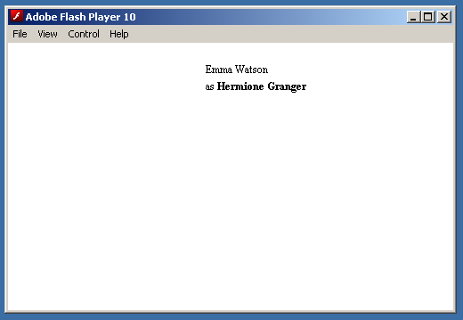
Ghi chú:
Bạn hoàn toàn có thể dùng source code thay cho swc bằng
cách chép thư mục “gs” vào thư mục “src” của dự
án. Độ ưu tiên khi biên dịch các lớp của Flex SDK sẽ
là source code rồi mới tới swc.
Xem
mã nguồn đầy đủ của Main.as trong phần này
V. Nhúng tài nguyên bên ngoài
vào ứng dụng Flash build bằng Flex SDK
Khi làm Flash với chương trình
Adobe Flash CS*, bạn có thể chèn hình ảnh, âm thanh hoặc
nhúng font vào cho TextField tùy mục đích trình diễn. Tất
cả những hình ảnh, âm thanh đó ban đầu đều nằm bên
ngoài được bạn chèn vào trong file fla và cuối cùng
khi xuất ra swf, tất cả các tài nguyên đó được nhúng
vào file swf.
Với Flex SDK, bạn cũng có thể
làm được việc tương tự bằng cách sử dụng thẻ
metadata [embed]. Sau đây sẽ hướng dẫn nhúng font và hình
ảnh vào ứng dụng Flash:
A. Nhúng file ảnh:
-
Tạo thư mục “assets” ngay tại thư mục gốc của dự
án. Theo quy ước, đây là thư mục chứa các tài nguyên sẽ được nhúng vào
trong file swf. (Phân biệt với các tài nguyên được load lúc chạy).
-
Tạo thư mục “images” bên trong “assets” và chép một
ảnh làm ví dụ vào (hermione.jpg).
Ảnh bạn có thể nhúng với thẻ [embed] là ảnh .jpg, .png, .gif (chỉ frame
đầu). Flex SDK không cho nhúng .bmp (khác với Flash Pro).
-
Phía bên cửa sổ soạn code, đặt dấu nháy trên một
dòng trống ngay phía dưới dòng khai báo tên lớp.
-
Click chuột phải lên file “hermione.jpg” bên
project panel và chọn “Insert into document”.
FD sẽ tự động tạo ra thẻ nhúng với nội dung:
[Embed(source
=
'../assets/images/hermione.jpg')]
-
Ngay bên dưới thẻ [embed], bạn khai báo một biến
kiểu
Class để Flex SDK biết sẽ nhúng dữ liệu của tài nguyên vào lớp này:
[Embed(source
=
'../assets/images/hermione.jpg')]
public var PhotoClass: Class;
-
Khi tài nguyên được nhúng là dạng hình ảnh, PhotoClass là một lớp con của
Bitmap. Bạn sử dụng ảnh được nhúng này
như sau:
//khai
báo biến
public var photo: Bitmap;
//khởi tạo và sử dụng đối tượng photo
private function init(e:Event = null):void {
/* ... */
photo = new PhotoClass();
photo.x = 10;
photo.y = 10;
addChild(photo);
}
Đến đây bạn có thể cho chạy
thử để thấy ảnh đã được nhúng và đặt trên stage.
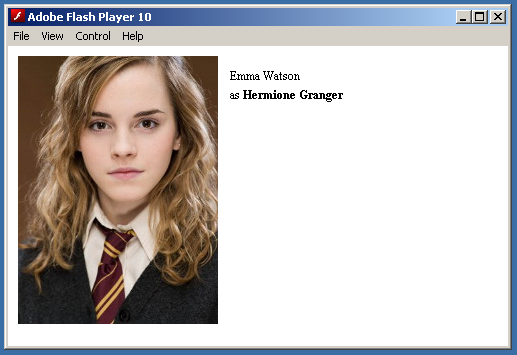
-
Thêm hiệu ứng hiện ảnh dần dần (fade in) bằng cách
thêm đoạn code sau vào hàm show():
//hiệu
ứng ảnh bắt đầu trong suốt hoàn toàn
photo.alpha = 0;
//chuyển alpha ảnh thành 1 trong thời gian 1s
TweenLite.to(photo, 1, { alpha: 1} );
-
Chạy chứng dụng để thấy hoạt cảnh ảnh fade in và
chữ chạy vào.
B. Nhúng font và cài đặt font cho TextField
-
Chúng ta sẽ dùng font Comic Sans MS (có sẵn trên
Windows) để làm ví dụ. Bạn hãy vào thư mục C:\Windows\Fonts, chép 2
file comic.TTF (regular) và comicbd.TTF (bold) vào thư mục assets/fonts
của dự án.
Để thuận tiện, bạn có thể download font từ các link sau: comic.TFF, comicbd.TFF
-
Viết thẻ nhúng font theo cú pháp như sau:
[Embed(source=
'../assets/fonts/comic.TTF'
,fontName = 'Comic' //tên của font dùng để đăng ký TextFormat
,fontStyle = 'normal' // normal|italic
,fontWeight = 'normal' // normal|bold
,unicodeRange=
'U+0020-U+002F,U+0030-U+0039,U+003A-U+0040,U+0041-U+005A,U+005B-U+0060,U+0061-U+007A,U+007B-U+007E'
//,embedAsCFF='false'
)]
public var ComicFontRegular: Class;
Lưu ý:
- Nếu bạn sử dụng Flex SDK 4.1, thẻ embed trên bắt buộc phải có tham số
embedAsCFF='false'. Lý
do tại sao phải có tham số này xin được bàn trong một bài viết khác.
-
unicodeRange là danh sách mã unicode tương ứng với các ký tự sẽ được
nhúng. Trong VD trên, các ký tự đang dùng là của nhóm Basic Latin, bạn
có thể mở rộng hoặc
dùng các bộ ký tự khác bằng cách tham khảo file:
flex_sdk/frameworks/flash-unicode-table.xml
-
Đăng ký font với hệ thống: thêm đoạn code sau vào đầu
hàm init()
Font.registerFont(ComicFontRegular);
//nhớ import lớp flash.text.Font
-
Tạo text format và gán format mặc định cho
TextField (cũng trong hàm init)
//khởi
tạo TextFormat, lưu ý tên font ("Comic") tương ứng với fontName trong
thẻ [embed]
var tf: TextFormat = new TextFormat("Comic", 20);
/*...*/
//với defaultTextFormat, text mới gán sẽ được áp dụng format này
nameText.defaultTextFormat = tf;
//bật embedFont=true để sử dụng font nhúng
nameText.embedFonts = true;
//chỉ gán text sau khi đã gán defaultTextFormat
nameText.text = "Emma Watson";
/*...*/
//tương tự với roleText:
roleText.defaultTextFormat = tf;
roleText.embedFonts = true;
roleText.htmlText = "as <b>Hermione Granger</b>";
-
Chạy ứng dụng, bạn sẽ thấy 2 dòng text có diện mạo
mới. Tuy nhiên đoạn text “Hermione Granger” không còn được in đậm bởi
vì chúng ta mới nhúng phần font normal.
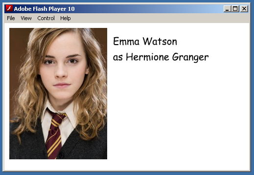
-
Để có font in đậm, bạn nhúng tiếp phần font bold
với đoạn code sau:
[Embed(source=
'../assets/fonts/comicbd.TTF'
,fontName = 'Comic' //tên của font dùng để đăng ký TextFormat
,fontStyle = 'normal' // normal|italic
,fontWeight = 'bold' //
normal|bold
,unicodeRange=
'U+0020-U+002F,U+0030-U+0039,U+003A-U+0040,U+0041-U+005A,U+005B-U+0060,U+0061-U+007A,U+007B-U+007E'
//,embedAsCFF='false'
)]
public var ComicFontBold: Class;
Trong hàm init() đăng ký tiếp bộ font bold này:
Font.registerFont(ComicFontBold);
-
Chạy lại chương trình bạn sẽ thấy phần “Hermione
Granger” được in đậm.
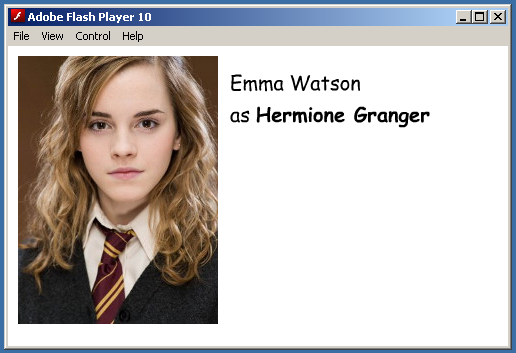
Ghi chú:
Qua ví dụ trên bạn cũng thấy rằng, font thường và font in đậm là 2 bộ
font khác nhau (tương tự cho font in nghiêng, nghiêng + đậm). Khi
nhúng, các kiểu khác nhau của cùng một font cần được nhúng lần lượt và
tường minh. Điều này làm sáng tỏ một số vấn đề với TextField bạn thường
gặp khi sử dụng font nhúng như là: không chịu hiển thị chữ in đậm, các
thẻ <b> hay <i> đôi khi làm mất chữ khi dùng với htmlText...
Xem
mã nguồn đầy đủ của Main.as trong phần này
VI. Kết hợp với Flash Professional
Kết hợp với Flash Pro chúng ta sẽ tận dụng
được
khả năng vẽ hoạt cảnh bằng vector và giao diện thiết
kế trực quan.
A. Nhúng symbol từ swf xuất bởi Flash Pro
-
Tạo thư mục “fla” tại gốc của dự án.
-
Trong Flash Pro, tạo file symbols.fla
mới với template ActionScript 3 và save trong thư mục “fla” vừa tạo.
-
Tạo một Button có label là “Show” với
hiệu ứng riêng biệt cho up, over, down.
-
Tạo linkage cho Button mới với tên là
symbols.ShowButton.
(Flash CS5: Mở library (Ctrl-L) > chuột phải lên show-btn >
Properties > mở rộng phần Advanced > chọn Export for ActionScript
> Tại trường Class, nhập “symbols.ShowButton” > Tại trường Base
Class, nhập flash.display.SimpleButton (có thể đã có sẵn) > OK >
Flash cảnh báo việc
tạo tự động class > OK.)
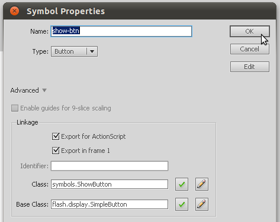
-
Xuất fla thành symbols.swf
-
Trong cửa sổ edit Main.as của FD, thêm
đoạn code sau để nhúng symbol ShowButton:
[Embed(source='../fla/symbols.swf',
symbol='symbols.ShowButton')]
public
var ShowButtonClass: Class;
-
Khai báo một biến SimpleButton mới và
khởi tạo ShowButton trong hàm init:
public
var showButton: SimpleButton;
private function init(e:Event = null):void {
/* ... */
//tạo nút ShowButon:
showButton = new ShowButtonClass();
showButton.x = stage.stageWidth - showButton.width -
10;
showButton.y = stage.stageHeight - showButton.height
- 20;
showButton.addEventListener(MouseEvent.CLICK,
showButtonClickHandler);
addChild(showButton);
}
-
Chuyển lệnh gọi hàm show() trong init
sang cho showButtonClickHandler():
private
function showButtonClickHandler(e:MouseEvent):void {
show();
}
-
Build và chạy chương trình. Lần này
bạn phải nhấn nút “Show” để chạy hoạt cảnh thay vì tự động như trước.
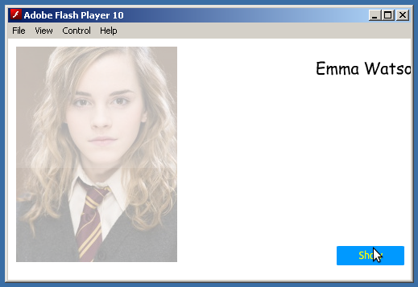
Thử nhúng một symbol là MovieClip nhiều
frame và có code đi kèm:
-
Trong library của Flash Pro, duplicate
show-btn, đặt tên mới là hide-mov và sửa kiểu (Type) của nó thành
MovieClip.
-
Cũng trong cửa sổ symbol properties,
chọn Export for ActionScript. Nhập class: symbols.HideButton (Base
class là flash.display.MovieClip). Sau đó OK 2 lần.
-
Chỉnh sửa MovieClip vừa tạo:
- Sửa text của nút thành "Hide"
- Thêm các label “up”, “over”, “down” cho các frame thể hiện trạng thái
tương ứng của nút.
- Tạo một layer rỗng và chèn đoạn code xử lý sự kiện chuột như sau:
import
flash.events.MouseEvent;
stop();
this.addEventListener(MouseEvent.ROLL_OVER, rollOverHandler);
this.addEventListener(MouseEvent.ROLL_OUT, rollOutHandler);
this.addEventListener(MouseEvent.MOUSE_DOWN, mouseDownHandler);
this.addEventListener(MouseEvent.MOUSE_UP, mouseUpHandler);
this.buttonMode = true;
function rollOverHandler(event: MouseEvent): void {
this.gotoAndStop("over");
}
function rollOutHandler(event: MouseEvent): void {
this.gotoAndStop("up");
}
function mouseDownHandler(event: MouseEvent): void {
this.gotoAndStop("down");
}
function mouseUpHandler(event: MouseEvent): void {
this.gotoAndStop("over");
}
Đoạn code trên sẽ làm cho HideButton có hiệu ứng
mouse over và down tương tự như ShowButton.
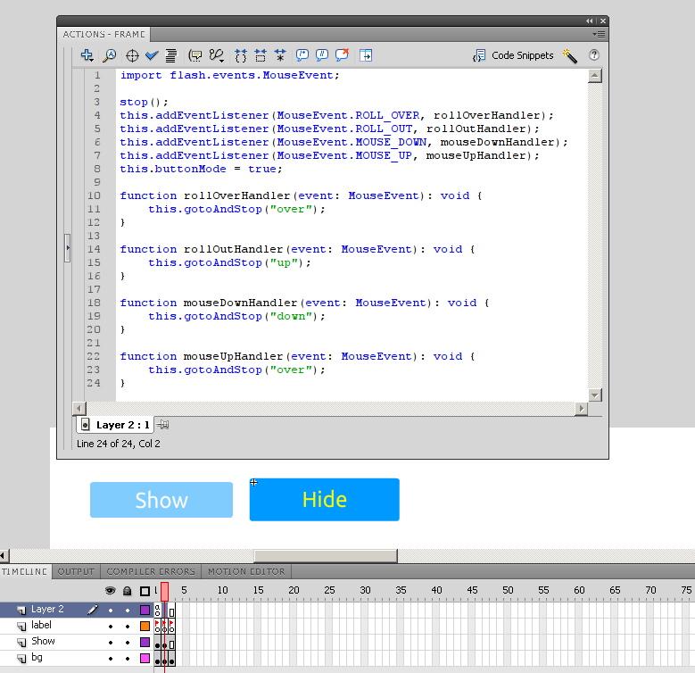
-
Xuất bản FLA thành SWF sau đó quay trở
lại FD nhúng symbol HideButton vào Main:
[Embed(source
= '../fla/symbols.swf', symbol = 'symbols.HideButton')]
public var HideButtonClass:
Class;
-
Khai báo một biến MovieClip mới và
khởi tạo HideButton trong hàm init:
public
var hideButton: MovieClip;
private function init(e:Event = null):void {
/* ... */
//tạo nút HideButon:
hideButton = new HideButtonClass();
hideButton.x = showButton.x - hideButton.width - 10;
hideButton.y = stage.stageHeight - hideButton.height
- 20;
hideButton.addEventListener(MouseEvent.CLICK,
hideButtonClickHandler);
}
-
Viết đoạn code xử lý hoạt cảnh hide()
và gọi nó trong hideButtonClickHandler():
private
function hideButtonClickHandler(e:MouseEvent):void {
hide();
}
private function hide(): void {
//di chuyển các TextField về vị trí mặc định
nameText.x = 220;
roleText.x = 220;
//alpha mặc định
photo.alpha = 1;
//di chuyển nameText từ vị trí hiện tại ra khỏi phía
trái của stage trong thời gian 0.7s
TweenLite.to(nameText, 0.7, { x: - nameText.width }
);
//di chuyển roleText từ vị trí hiện tại ra khỏi phía
trái của stage trong thời gian 0.7s
//nhưng delay sau 0.2s
TweenLite.to(roleText, 0.7, { x: - roleText.width,
delay: 0.2 } );
//chuyển alpha (độ trong suốt) của ảnh thành 0 trong
thời gian 1s
TweenLite.to(photo, 1, { alpha: 0} );
}
-
Build và test ứng dụng. Bạn vẫn có thể
click lên HideButton để chạy hiệu ứng nhưng sẽ thấy nó nhảy frame liên
tục và không còn hiệu ứng rê chuột nữa. Đây là một hạn chế cần lưu ý
của việc
dùng thẻ [embed] để nhúng symbol. Tất cả các ActionScript trên frame
của MovieClip
hoặc trong lớp gắn với linkage sẽ bị mất.
Để khắc phục điều này, chúng ta sẽ sử dụng SWC xuất từ Flash Pro.
B. Sử dụng SWC xuất
bởi Flash Pro:
-
Trong Flash Pro với symbols.fla đang
mở, vào File > Publish Settings > Flash > SWF
Settings > đánh dấu chọn “Export SWC”.
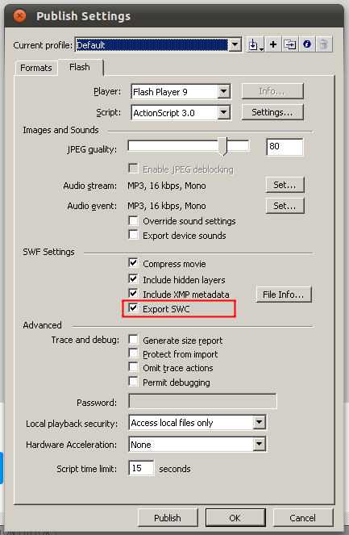
-
Xuất bản lại file fla. Bạn sẽ thấy
file symbols.swc mới được tạo
ra.
-
Quay trở lại FD, làm thao tác “add to
library” (tham khảo bước IV.3) cho symbols.swc vừa được tạo.
-
Trong file Main.as, sửa kiểu của biến
hideButton thành HideButton. (FD sẽ tự động import lớp.)
-
Tại dòng khởi tạo biến hideButton, sửa
lệnh new HideButtonClass()
thành new HideButton()
(Sau đó có thể xóa phần nhúng HideButtonClass ở trên)
-
Build và test ứng dụng. Lúc này
HideButton đã có đầy đủ hiệu ứng rê chuột.
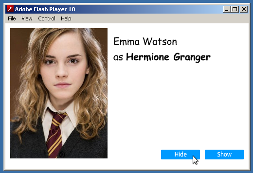
Xem
mã nguồn đầy đủ của Main.as trong phần này
↓ Tải
về toàn bộ mã nguồn và tài nguyên của dự án. ↓
VII. Kết luận:
-
Một khi bạn đã thuần thục và nắm những
bí quyết sử dụng FlashDevelop với Flex SDK, bạn có thể phát triển dự án
được biên dịch hoàn toàn bằng Flex SDK.
-
Khi đó Flash Pro
chỉ còn được sử dụng
như một công cụ tạo các thành phần giao diện cơ bản.
- Mô hình kết hợp Flash Pro và
Flex SDK cho phép bạn dễ dàng tách
các module trên nhiều file FLA khác nhau, tránh được xung đột
hay gặp
phải nếu nhiều người làm việc trên một FLA duy nhất.
-
Việc build (và
deploy) dự án có thể dễ dàng được tự
động hóa bằng các script như BAT, BASH... hay bằng các công cụ
như ANT
(FlexANT), Maven (Flexmojos).
VIII. Đi tiếp từ đây: